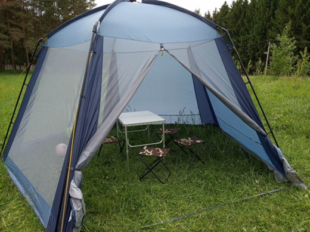

Туристический шатер Trek Planet Weekend Dome
|  |
Шатер Trek Planet Weekend DomeХарактеристика товара
|
Подробное описание товара
Универсальный шатер пятиугольной формы Weekend Dome с огромным внутренним помещением отлично подойдет для дачи в качестве беседки. Незаменим при длительном кемпинга и на природе для организации столовой зоны. Две стороны из полиэстера надежно защищают от ветра и дождя, три другие стороны из москитной сетки позволяют шатру отлично проветриваться и защищают от насекомых.
КАКОЙ ИЗ ЭТИХ ВАРИАНТОВ ЛУЧШЕ ДЛЯ ОФОРМЛЕНИЯ МАГАЗИНА? Напишите в комментам.:)
|
Увеличить изображение |
Шатер Trek Planet Weekend Dome в таблице |
|
Характеристика |
Подробное описание товара |
|
|
Универсальный шатер пятиугольной формы Weekend Dome с огромным внутренним помещением отлично подойдет для дачи в качестве беседки. Незаменим при длительном кемпинга и на природе для организации столовой зоны. Две стороны из полиэстера надежно защищают от ветра и дождя, три другие стороны из москитной сетки позволяют шатру отлично проветриваться и защищают от насекомых. |
|
Пример работы с таблицами (временно!)
| Увеличенная высота строки | ||||